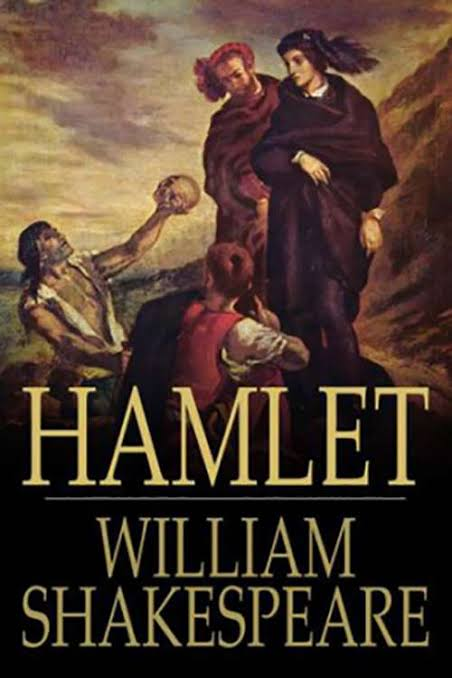

Hamlet
Hamlet
Hamlet adalah salah satu karya dari dramawan besar Inggris, William Shakespeare. Ditulis pada tahun 1599-1601.Dan diterjemahkan ke dalam Bahasa Indonesia berjudul hamlet,pangeran denmark oleh Trisno sumardjo
Sinopsis Hamlet
Bercerita tentang seorang raja yang meninggal dengan misterius yang kemudian digantikan oleh claudius, yaitu paman hamlet. Claudius juga menikahi ibu Hamlet dan membuat hamlet sakit hati. Suatu malam, arwah sang raja menghantui istana kerajaan. Ia ingin anaknya, Hamlet, untuk membalas dendam karena ayah hamlet dibunuh oleh claudius. Pangeran Hamlet yang berjiwa sensitif bersumpah untuk membalas dendam dengan segala cara yang akhirnya harus dibayar dengan mahal.
Lalu laertes menantang hamlet untuk adu pedang, namun pedang Laertes rupanya telah terlebih dulu diberi racun oleh Claudius untuk mencurangi duel tersebut agar Hamlet tewas oleh racun yang ada di pedang itu. Tidak hanya itu, bahkan minuman anggur sebagai jatah untuk Hamlet yang sedianya dipergunakan untuk masa jeda istirahat pertarungan pun telah diberi racun sama oleh Claudius.
Pada kedua putaran pertama, Hamlet sempat menang melawan Laertes. Namun malang, minuman anggur milik Hamlet turut diminum oleh Gertrude, ibunya. Ibu Hamlet meminum anggur itu tak lain adalah untuk memberi semangat kepada Hamlet.Pada kedua putaran pertama, Hamlet sempat menang melawan Laertes. Namun malang, minuman anggur milik Hamlet turut diminum oleh Gertrude, ibunya. Ibu Hamlet meminum anggur itu tak lain adalah untuk memberi semangat kepada Hamlet.